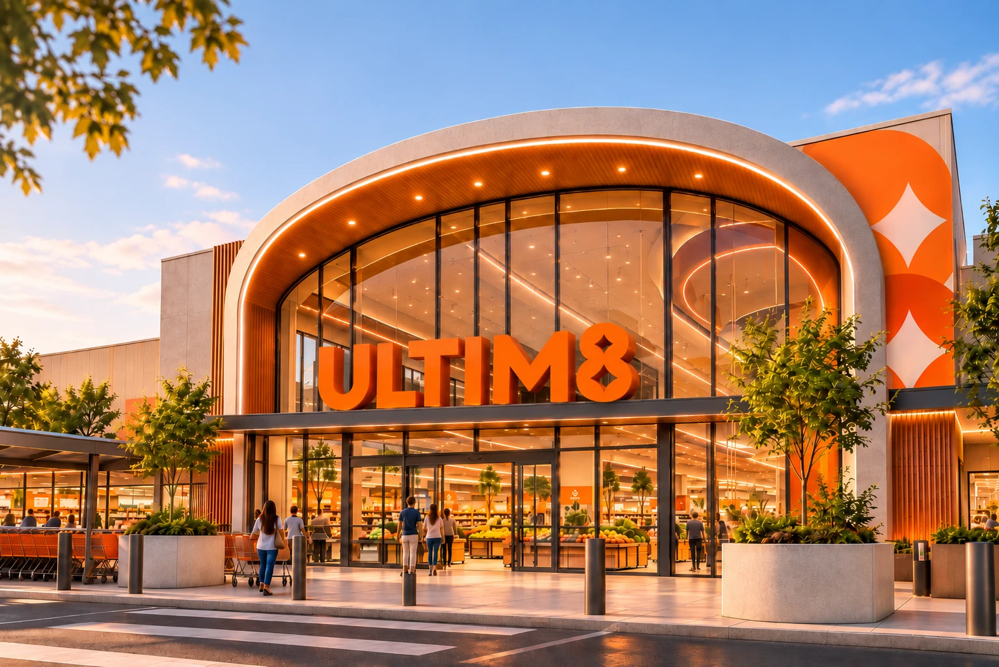
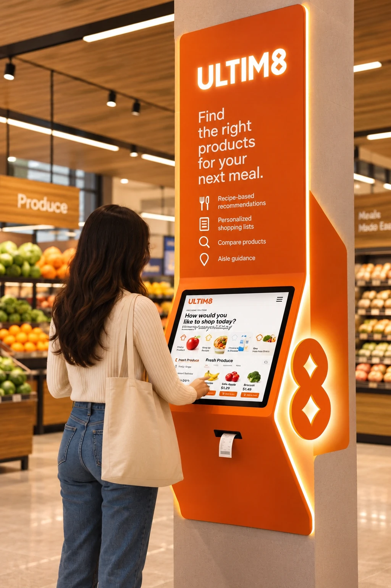
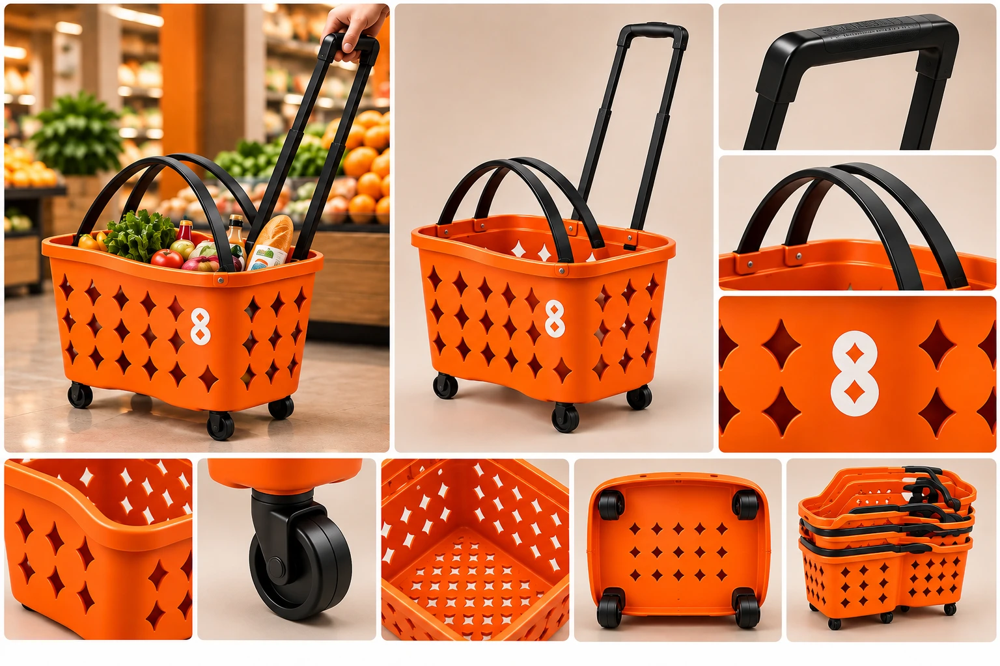
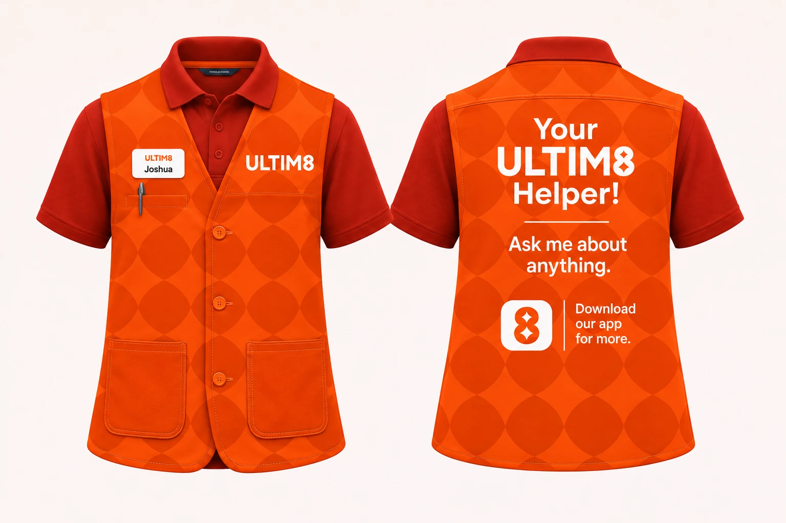
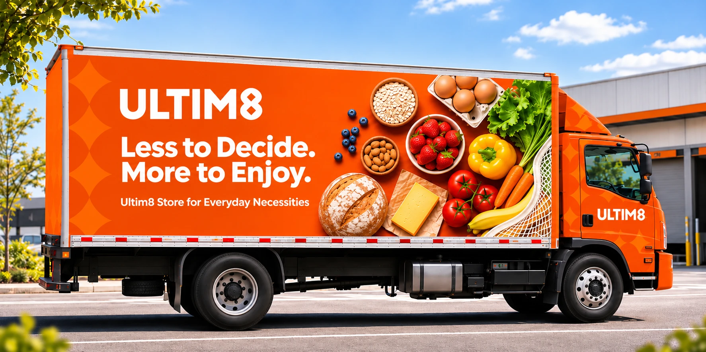

AI ToolKit
Our recommended AI tools support designers in creating consistent, efficient, and brand-aligned visual communications. Each tool serves a specific purpose, from prompt development and content creation to image generation and design refinement.
AI should assist with executing creative decisions while following our established brand guidelines. All generated outputs must be reviewed for visual consistency, accuracy, and compliance with ULTIM8’s identity before final use.
AI Tools
01. ChatGPT — Image Generation
Use: Generate brand imagery, promotional graphics, product visuals, and realistic mockups.
Avoid: Recreating or modifying approved brand assets.
Human Review: Check brand consistency, accuracy, composition, and visual quality.
02. Claude — Motion, UI/UX & Vectors
Use: Create motion graphics, interactive interfaces, UI/UX designs, and vector illustrations.
Avoid: Altering approved brand elements or introducing inconsistent visual styles.
Human Review: Check usability, responsiveness, accessibility, vector accuracy, and brand consistency.
Workflow:
- Human Designer
- AI Tools
- Adobe Softwares
- Human Review
AI
Prompts
Permanent
How we work
As the graphic designer, I define the brand intent, creative direction, and visual decisions; you execute the design. Strictly follow the approved ULTIM8 brand guidelines and use only the supplied visual assets relevant to the requested application, preserving their original appearance and approved usage.
Maintain the exact original ULTIM8 logo artwork, including its proportions, letterforms, spacing, and diamond-shaped spark within the number 8. Scale the entire logo uniformly without altering or emphasizing individual characters. Do not independently reinterpret brand elements, suggest alternative concepts, or introduce unapproved visual elements. Make only the technical adjustments necessary to execute explicitly defined instructions. If any information is missing, ambiguous, or conflicting, consolidate all clarification questions and ask them before generating the design.
Brand Strategy
Apply the following brand strategy to guide all design execution. Adhere strictly to the guidelines below. Do not introduce additional brand expressions, emotions, or interpretations beyond those explicitly defined.
Brand Manifesto
Communicate ULTIM8 Market as a non-membership retail brand that simplifies everyday shopping. Ensure every design reinforces the brand’s purpose: reducing decision overload, enabling confident choices, and helping customers spend less time deciding and more time enjoying life. Translate this purpose into clear information hierarchy, simplified communication, and reduced competing visual messages.
Brand Positioning
Address busy, value-conscious adults seeking convenience and affordability. Position ULTIM8 as a helpful retail experience that offers curated choices, guided services, and meaningful everyday value. Communicate affordability through transparent pricing, relevant value information, and straightforward messaging without introducing unsupported promotional claims.
Experience Principles
Apply cognitive relief, affordability, clarity, relevance, and trust across all brand touchpoints. Prioritize simplicity, intuitive communication, and effortless decision-making. Reduce cognitive overload through organized information, clearly distinguished primary actions, and progressive disclosure of secondary details. Avoid overwhelming customers with excessive information, unnecessary choices, or competing messages.
Brand Personality & Voice
Express the personality of “The Helpful Friend Who Makes Life Easier.” Use clear, friendly, empathetic, encouraging, and conversational language. Structure messaging around customer needs: present the solution first, followed by its benefits and helpful recommendations. Keep communication concise, accessible, and relevant to the specific application. Avoid corporate, pushy, strict, or overwhelming communication.
Tagline
Use “Less to Decide. More to Enjoy.” exactly as written whenever the approved application requires the brand tagline. Preserve its wording, capitalization, and punctuation. Do not automatically introduce the tagline into applications where it has not been requested or specified.
Visual Principal
Apply the following visual principles consistently across all design executions. Prioritize affordability, cognitive relief, clarity, usability, and brand recognition. Use the supplied brand guideline images and asset bundle as authoritative visual references. Do not introduce visual styles or elements outside the approved guidelines. Maintain clean, uncluttered compositions and do not independently alter or reinterpret approved brand elements.
Logo Usage
Use the original, single-color ULTIM8 Orange (#F26522) primary logo for all major brand communications. The primary logo contains only “ULTIM8,” without “Market.” Use approved black or white variations only when contrast, visibility, or application requirements make the orange logo unsuitable.
Select alternative logo variations strictly according to their intended applications in the brand guidelines. Preserve the exact typography, proportions, spacing, and diamond-shaped spark within the number 8. Maintain the original size and proportion of the number 8 relative to the remaining letters. Scale the entire logo uniformly without enlarging or emphasizing individual characters. Do not recreate, redraw, stretch, distort, recolor, rearrange, or modify the supplied logo artwork.
Follow the approved minimum size, clear-space, and logo usage restrictions documented in the supplied guidelines. If measurements are unavailable, request clarification rather than inventing specifications. Maintain the logo’s original proportions while allowing the primary communication headline to take visual priority when appropriate.
Pattern
Use only the approved brand pattern from the supplied asset bundle. Preserve the exact proportions, orientation, spacing, and arrangement of the original pattern, including the number 8 and its internal spark. For larger applications, extend the pattern by repeating the approved artwork without altering its structure. Do not recreate, distort, rearrange, or introduce additional graphic elements, decorative repetitions, or AI-generated pattern variations.
Apart from merchandise applications, use the approved pattern selectively as a restrained background or watermark in promotional materials when appropriate. Ensure it does not interfere with readability, visual hierarchy, or the primary communication. Do not introduce the pattern into applications where it is not required or approved.
Typeface
Use Pacaembu Regular for headlines and Pacaembu Light for body copy. Establish a clear hierarchy through scale, weight, spacing, and color. Do not introduce additional typefaces or unapproved font weights. Preserve legibility and consistent typographic treatment across all brand applications.
Color, Value, and Ground
Use ULTIM8 Orange (#F26522) and Pure White (#FFFFFF) as primary colors. Use Deep Orange (#CB3727), Peach (#FDD3BB), Buttercream (#FFF2D5), and Neutral Grey (#E6E7E8) as secondary colors. Reserve Sunshine Yellow (#FFC83D) for selective accents. Follow the 60–30–10 color distribution rule, maintaining sufficient contrast, clear visual hierarchy, and legibility across all applications.
Visual Assets
Use only the approved logos, patterns, illustrations, and other supplied assets relevant to the requested application. Preserve their original appearance, proportions, colors, and intended usage. Do not alter, distort, recolor, recreate, any asset without explicit permission. Do not introduce unapproved graphics, decorative elements, or additional brand expressions. If an essential asset is missing, request clarification before generating the design.
Generative Grammer
Apply the following generative rules to translate ULTIM8’s brand intent into consistent visual outcomes. Maintain clarity, hierarchy, and brand recognition while allowing controlled variation across applications. Use only the approved visual identity and supplied brand assets.
Typesetting
Use Pacaembu Semibold for headlines, Regular for subheadings, and Light for body copy. Use Pacaembu Light for oversized headlines. Set body text leading to 2× the font size as the default, allowing adjustments only when necessary to preserve readability and the intended information hierarchy. Prioritize legibility, avoid justified text, and maintain left alignment wherever possible. Ensure sufficient contrast when placing text over images. Do not introduce additional typefaces or unapproved font weights.
Color and Graphic Elements
Apply the approved color palette using the 60–30–10 rule across the overall composition rather than individual elements. Avoid low-contrast color combinations, particularly between lighter shades. Reserve the secondary palette for extended brand communications and supporting visual elements. Use only approved brand assets without alteration. Allow controlled flexibility in layout, scale, and content arrangement while maintaining visual consistency and brand recognition.
Experiential Translation
Simplify information, emphasize meaningful product comparisons, and make pricing immediately recognizable. Create bright, attractive, and welcoming visuals through clear information organization, approved warm colors, relevant product photography, and sufficient negative space. Select and compose photography to complement the brand’s visual identity, prioritizing clear product recognition and minimizing cognitive effort. Avoid unnecessary visual clutter, competing messages, and excessive information.
Composition
Establish thoughtful juxtaposition between images, typography, and approved graphic elements. Keep layouts expressive yet uncluttered, with a clear visual hierarchy, balanced proportions, and sufficient negative space. Use the number 8 independently as a watermark or graphic element only when an approved standalone asset is supplied. Preserve its exact original form, proportions, and internal diamond-shaped spark. Do not extract, recreate, enlarge, or modify the number 8 from the primary logo. Keep approved brand patterns in the background, ensuring they never overpower primary content, reduce legibility, or disrupt the information hierarchy.
Extended prompt for poster
Using the established ULTIM8 permanent brand guidelines and visual principles, create an in-store directional sign promoting the AI kiosk as a tool for simplified and confident decision-making. Highlight its key functions, including grocery list creation, recipe recommendations, product comparisons, and shopping assistance. Use the supplied reference image to guide the content, composition, and visual presentation. Maintain consistency with the approved brand identity while ensuring clear communication, intuitive wayfinding, and a welcoming shopping experience.
Flexible
Project Brief — AI Kiosk UI/UX
Design an interactive, in-store AI kiosk interface for ULTIM8 that simplifies grocery shopping and reduces decision fatigue. The kiosk is intended for young professionals, overthinkers, busy shoppers, and customers seeking guidance in making confident product choices. It will be installed inside ULTIM8 retail stores as a self-service digital shopping assistant, helping customers discover products, compare options, explore recipes, organize grocery lists, and locate items within the store. The experience should be intuitive, accessible, welcoming, and efficient, minimizing the time and mental effort required to make shopping decisions. Follow the established ULTIM8 brand guidelines while adapting the interface to touchscreen functionality, customer needs, and the physical retail environment. Prioritize cognitive relief, clarity, usability, and brand consistency without introducing unnecessary complexity or visual clutter.
Brand Application
Follow the approved ULTIM8 visual identity using the supplied reference images. Preserve the exact original logo artwork, including its proportions, letterforms, spacing, and diamond-shaped negative space within the number 8. Scale the logo uniformly without modifying or emphasizing individual characters. Do not recreate the logo or incorporate brand patterns into the interface.
Hierarchy & Layout
Maintain a fully left-aligned, scroll-friendly interface with clear typography and generous spacing. Position the original ULTIM8 Orange logo flush left in the header, with navigation controls aligned to the right. Use Pacaembu Regular in black for headlines. Establish a clear descending information hierarchy, prioritizing category titles, subcategories, product names, prices, primary actions, and descriptions.
Composition
Apply fundamental design principles of balance, alignment, contrast, repetition, and visual hierarchy. Guide eye movement naturally through organized content sections, intuitive navigation, and consistent spacing. Balance positive and negative space to minimize cognitive overload while ensuring adaptability across kiosk and mobile app interfaces.
Color & Brand Identity
Apply the approved ULTIM8 color palette using the 60–30–10 distribution rule. Prioritize ULTIM8 Orange (#F26522) and Pure White (#FFFFFF), supported by Deep Orange (#CB3727), Peach (#FDD3BB), Buttercream (#FFF2D5), and Neutral Grey (#E6E7E8). Reserve Sunshine Yellow (#FFC83D) for selective emphasis. Use orange for primary actions, white for clean backgrounds, and secondary colors to establish visual distinction.
Interaction Principles
Prioritize intuitive navigation, recognizable controls, touch-friendly interactions, clear product imagery, visible pricing, and simplified information. Apply progressive disclosure to reduce unnecessary information and help customers make confident decisions with minimal effort.
Creative Flexibility
Allow controlled variation in screen compositions, product grids, image placement, content density, and scrolling behavior according to each screen’s purpose. Maintain consistent typography, approved colors, rounded cards, spacing, and interactive components. Avoid excessive shadows, unnecessary decoration, and visual clutter.
Design Objective
Create a clean, welcoming, and accessible digital experience that reflects ULTIM8’s commitment to cognitive relief, affordability, and confident decision-making.
What I need from you
Design a functional, landscape-oriented ULTIM8 AI kiosk interface at 1920 × 1080 px, using an iPad-style touchscreen layout.
Create a homepage featuring a welcoming headline, the original ULTIM8 logo in the top-left header, a hamburger menu in the top-right, and four prominent navigation cards: Find a Product, Shop by Recipe, Compare & Choose, and Your Past Orders. Each card should include a recognizable icon, relevant imagery, and a concise description. Include a product browsing section with a left-aligned category navigation sidebar, horizontal subcategory filters, product search, organized product grids, product images, visible pricing, and prominent Add to Cart buttons. Develop supporting screens for product discovery, recipe-based shopping, product comparisons, past orders, cart management, and final shopping list review. Reserve the Print Shopping List function exclusively for the final cart summary screen. Ensure that customers can search, compare, select, and organize products through intuitive touchscreen interactions with minimal steps. Maintain consistent navigation and functionality across all screens.
Technical Specifications
Canvas size: 1920 × 1080 px; Orientation: Landscape; Color mode: RGB;Naming convention: [BrandName_Media_ MediaCategory_Year]; Interactive prototype: [Required/Not Required]; Final deliverables: [Specify number of screens and export formats].
Our AI Design Checklist helps designers ensure that every AI-generated output follows ULTIM8’s established brand guidelines. It serves as a quality-control reference to verify brand consistency, visual accuracy, and design effectiveness before final approval.
Checklist:
0 of 7 checked